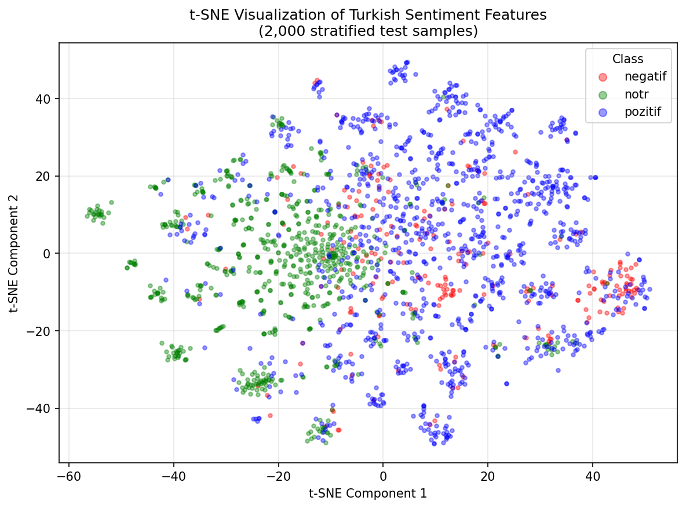
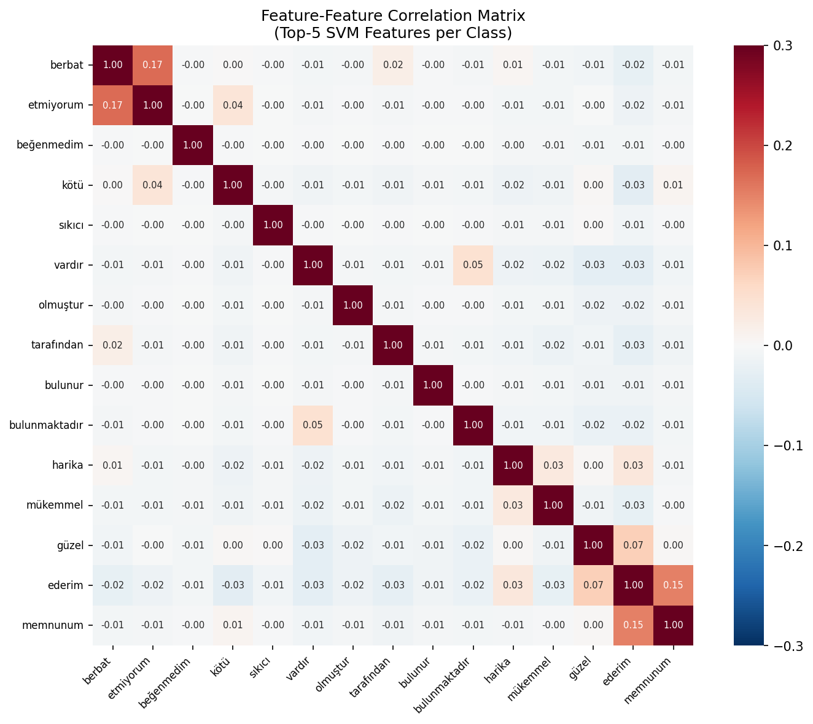
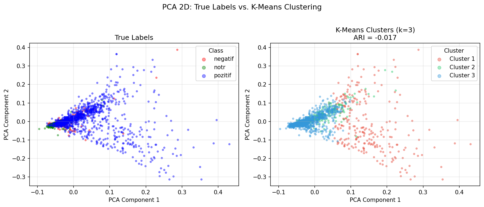
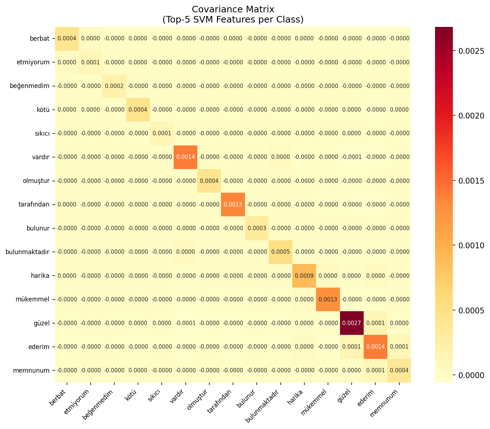
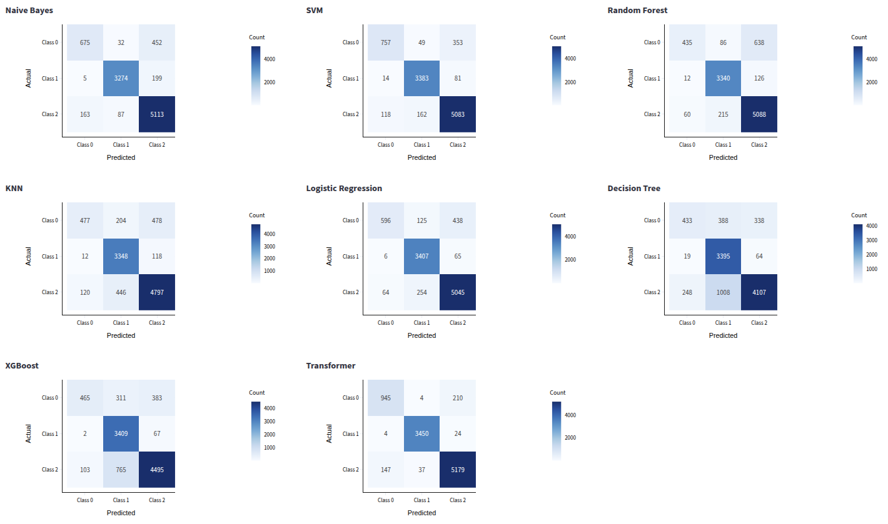
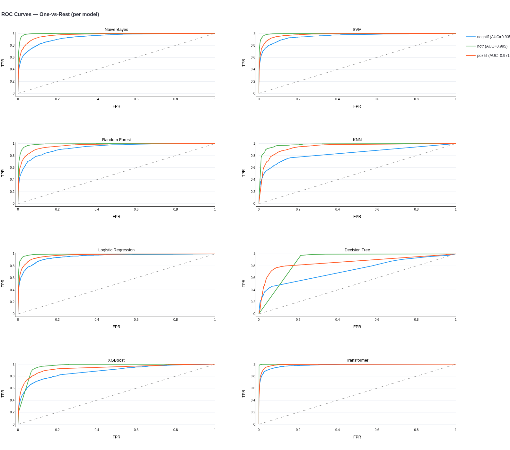
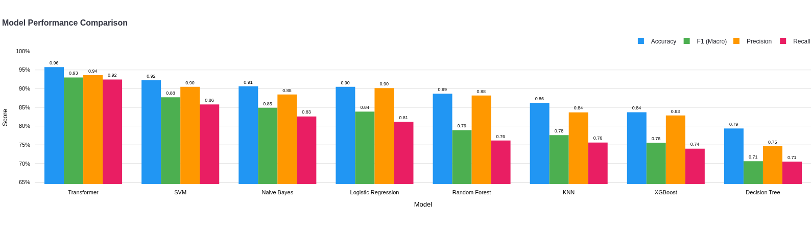

Araştırma Sorusu: Çoklu ajan mimarisi metin sınıflandırmayı etkin şekilde yönlendirebilir mi ve klasik sınıflandırıcılar transformer tabanlı modellere karşı nasıl performans gösterir?
Dil tespiti (TR/EN)
Domain tespiti (sentiment/haber)
Veri seti önerisi
Gemini LLM + Fallback
TF-IDF öznitelik çıkarımı
8 model desteği
Tahmin + güven skoru
Sklearn + HuggingFace
LIME analizi
SHAP analizi
LLM doğal dil açıklama
Model-agnostik
class TextClassificationPipeline:
def __init__(self):
self.intent_agent = IntentClassifierAgent() # Ajan 1
self.classification_agent = ClassificationAgent() # Ajan 2
self.xai_agent = XAIAgent() # Ajan 3
def process(self, text, explain=True):
intent = self.intent_agent.process(text) # Dil + Domain
result = self.classification_agent.process(intent) # Tahmin
explanation = self.xai_agent.process(result) # Açıklama
return {intent, result, explanation}| Veri Seti | Dil | Görev | Sınıf | Eğitim | Test |
|---|---|---|---|---|---|
| IMDB | İngilizce | Binary Sentiment | 2 | 25,000 | 25,000 |
| AG News | İngilizce | Haber Sınıflandırma | 4 | 50,000 | 7,600 |
| Turkish Sentiment ★ | Türkçe | Multiclass Sentiment | 3 | 440,679 | 48,965 |
| TTC4900 | Türkçe | Haber Sınıflandırma | 7 | ~3,920 | ~980 |
Odak: Turkish Sentiment — 440K kısa metin, 3 sınıf (pozitif %53.5, nötr %34.9, negatif %11.6). Ciddi sınıf dengesizliği → Macro-F1 birincil metrik.



TF-IDF uzayında sentiment sınıfları geometrik olarak ayrılamıyor → Supervised sınıflandırıcılar gerekli

| Sınıf | Sayı | Oran |
|---|---|---|
| Pozitif | 226,896 | %51.5 |
| Notr | 162,562 | %36.9 |
| Negatif | 51,047 | %11.6 |
1:3.2:4.4 dengesizlik → Macro-F1 kritik metrik, Accuracy yanıltıcı
| Pozitif | Notr | Negatif |
|---|---|---|
| harika | vardır | berbat |
| mükemmel | olmuştur | etmiyorum |
| güzel | tarafından | beğenmedim |
| ederim | bulunur | kötü |
| memnunum | bulunmaktadır | sıkıcı |
| gayet | değildir | iade |
| 1010 | sahiptir | rezalet |
| iyi | almıştır | en kötü |
| teşekkürler | aldı | yazık |
| şık | genellikle | kalitesiz |
# src/agents/intent_classifier.py
class IntentResult(BaseModel):
language: Language # english / turkish
domain: Domain # sentiment / news
dataset: Dataset # imdb / ag_news / ...
confidence: float
reasoning: str
class IntentClassifierAgent(BaseAgent):
"""Gemini LLM ile dil + domain tespiti,
statik kural tabanlı fallback."""
def process(self, text):
# 1. Gemini ile analiz (JSON output)
# 2. Fallback: Türkçe karakter kontrolü
# + keyword matching
return IntentResult(...)# scripts/train_experiment.py
# Config-driven eğitim pipeline
config = load_yaml("configs/turkish_sentiment.yaml")
# Her dataset için ayrı YAML config:
# - TF-IDF parametreleri
# - Model hiperparametreleri
# - Eğitim/test ayarları
for model_name in config['models']:
model = create_model(model_name)
model.fit(X_train_tfidf, y_train)
metrics = model.evaluate(X_test_tfidf, y_test)
save_results(metrics) # JSON formatProje yapısı: src/agents/ (3 ajan) · src/models/ (8 model) · src/preprocessing/ · configs/ (YAML) · app/ (Streamlit 7 sayfa)
| Model | Accuracy | Macro-F1 | ROC-AUC |
|---|---|---|---|
| Transformer (BERTurk) | 0.9574 | 0.9298 | 0.9909 |
| SVM | 0.9223 | 0.8768 | 0.9748 |
| Naive Bayes | 0.9062 | 0.8488 | 0.9670 |
| Logistic Reg. | 0.9048 | 0.8387 | 0.9735 |
| Random Forest | 0.8863 | 0.7893 | 0.9625 |
| KNN | 0.8622 | 0.7757 | 0.9217 |
| XGBoost | 0.8369 | 0.7554 | 0.9257 |
| Decision Tree | 0.7935 | 0.7063 | 0.8282 |


| Model | TP | FN | FP | TN |
|---|---|---|---|---|
| Transformer | 945 | 214 | 151 | 8690 |
| SVM | 757 | 402 | 132 | 8709 |
| Naive Bayes | 675 | 484 | 168 | 8673 |
| Logistic Reg. | 596 | 563 | 70 | 8771 |
| Random Forest | 435 | 724 | 72 | 8769 |
| KNN | 477 | 682 | 132 | 8709 |
| XGBoost | 465 | 694 | 105 | 8736 |
| Decision Tree | 433 | 726 | 267 | 8574 |
Transformer recall: 81.5%, SVM: 65.3%, DT: 37.4%

| Model | Ort. F1 | Std | p-value |
|---|---|---|---|
| SVM | 0.8214 | 0.0057 | — |
| Naive Bayes | 0.8058 | 0.0070 | <0.0001 |
| Logistic Reg. | 0.7733 | 0.0083 | <0.0001 |
| XGBoost | 0.7539 | 0.0106 | <0.0001 |
| KNN | 0.7413 | 0.0083 | <0.0001 |
| Random Forest | 0.7360 | 0.0097 | <0.0001 |
| Decision Tree | 0.6751 | 0.0115 | <0.0001 |
Tüm p < 0.0001 → SVM, 7 klasik modelin hepsini istatistiksel olarak anlamlı şekilde yeniyor
| Veri Seti | Görev | En İyi Klasik | F1-M | Transformer F1-M | Fark |
|---|---|---|---|---|---|
| IMDB | Binary Sentiment | SVM | 0.895 | 0.907 | 1.2 puan |
| AG News | 4-class Haber | SVM | 0.915 | 0.928 | 1.3 puan |
| Turkish Sentiment | 3-class Sentiment | SVM | 0.877 | 0.930 | 5.3 puan |
| Turkish News | 7-class Haber | SVM | 0.919 | 0.938 | 1.9 puan |
Temel bulgu: Sınıf dengesizliği transformer avantajını büyütüyor (dengeli: 1.2–1.9 puan → dengesiz: 5.3 puan). SVM tüm veri setlerinde en iyi klasik model.
Streamlit uygulamasına geçiş yapılacak